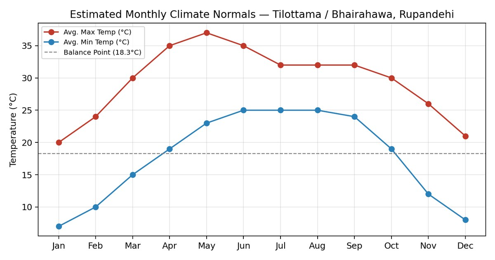
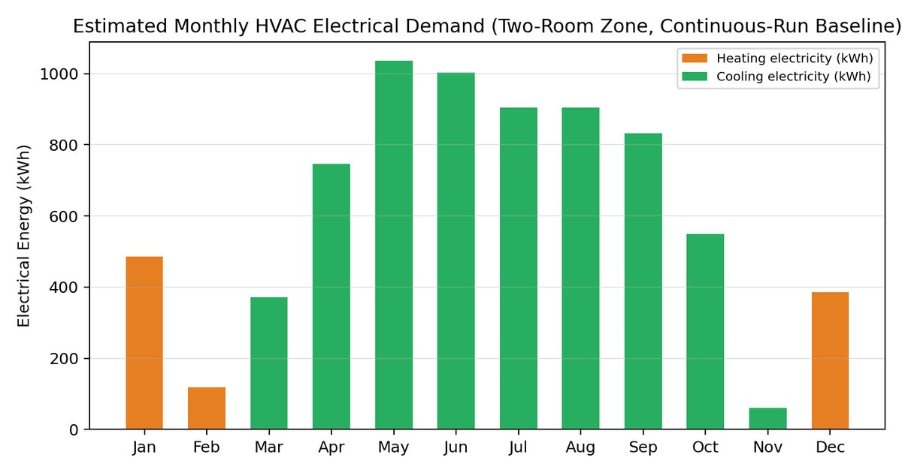

HVAC Sizing (Heating and Cooling Load Calculation)
A house in the Terai plains of western Nepal
Overview
A heating and cooling system has to be sized to match the building. Too small and the rooms are uncomfortable, too large and it wastes energy. This report works through the whole process for a residence in Tilottama, Rupandehi: describing the building, calculating its loads, choosing and sizing the equipment, forecasting a year of energy use, and testing ways to cut it.
Two rooms were studied in detail because together they show the two most common wall conditions in the house.
- Living room: 13 × 11 × 10 ft, 143 ft², two exterior walls (south and west) and two windows.
- Secondary room: 11 × 10 × 10 ft, 110 ft², one exterior wall (west) and one window.
The two rooms add up to 253 ft² (23.5 m²). The building is a south-facing house of 225 mm brick walls, an uninsulated 125 mm concrete roof slab and single-pane glass, which is typical Nepali construction.
How the loads were calculated
- Heating: the steady-state UA method (Q = U × A × ΔT) for every wall, window, roof and floor, plus infiltration and ventilation. Design conditions were 6.0 °C outdoors and 25 °C indoors.
- Cooling: the ETD/CLTD method, with sensible and latent loads worked out separately. Design conditions were 41.5 °C dry-bulb and 28.6 °C wet-bulb outdoors, and 25 °C and 50% relative humidity indoors. Humidity ratios for the latent loads were read from the psychrometric chart.
- Inputs: solar gain through glass, five occupants per room, lighting and appliances, air leakage by the crack method, and ventilation of 125 CFM per room by the people method.
- A 10% safety factor was added to both heating and cooling loads. The report's appendix shows every calculation step by step.
Results
- Heating load
- Living room 4.52 kW, secondary room 3.44 kW. Whole house 7.95 kW (27,140 Btu/hr).
- Cooling load
- Living room 2.54 TR, secondary room 2.06 TR. Whole house 4.61 TR (55,270 Btu/hr).
- Sensible heat ratio
- 0.71 for the living room and 0.65 for the secondary room.
- Biggest loads
- The roof is the largest envelope load in both seasons. Ventilation is the largest part of the heating load: 33% in the living room and 43% in the secondary room.
- Equipment
- One reversible inverter heat pump split system (R32 refrigerant) per room: 3.0 TR for the living room and 2.5 TR for the secondary room, rounded up to the next standard size. Cooling governs in both rooms.
- Energy use
- About 7,399 kWh a year if the system ran all day, 87% of it for cooling. With realistic intermittent use the estimate is about 2,600 to 3,300 kWh a year, or roughly NPR 26,000 to 40,000.
The climate is cooling-dominated, so the pre-monsoon months of April to June carry the highest demand, with May the peak.


Ways to cut energy use
Five measures were costed and compared against the 7,399 kWh baseline.
- Roof insulation (50 mm PUF or XPS board): about 1,554 kWh a year saved, paying back in 2.3 to 2.5 years. This is the biggest single saving.
- Air sealing and weatherstripping: about 110 kWh a year, paying back in under 2 years.
- External window shading: about 269 kWh a year, paying back in 3 to 5 years.
- Reflective roof coating: about 276 kWh a year, paying back in 6 to 7 years.
- Double glazing with Low-E glass: about 445 kWh a year, paying back in 8 to 10 years.
All five together could save about 2,654 kWh a year, around 36% of the baseline. The report recommends starting with air sealing, roof insulation and shading.